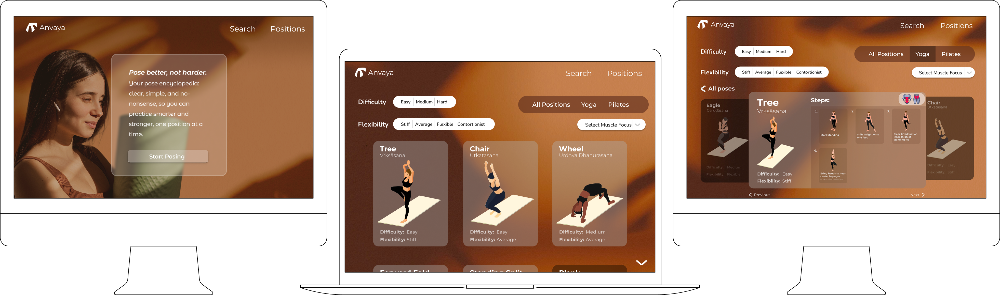
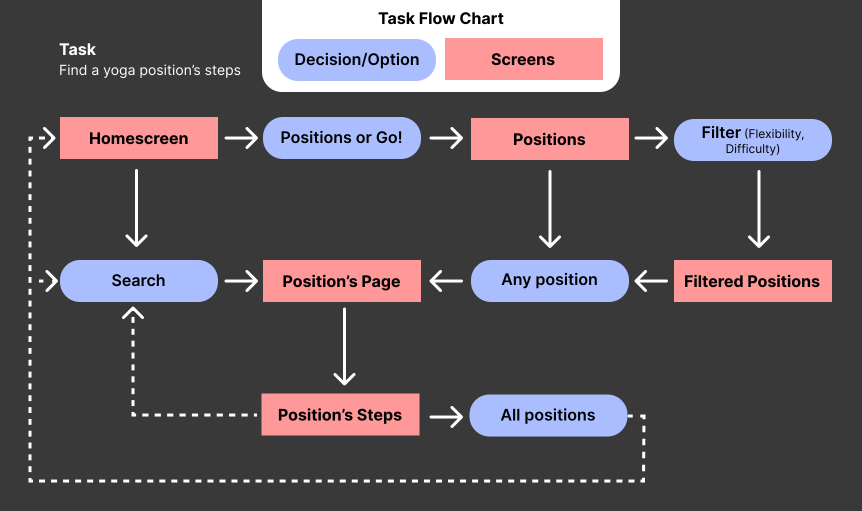
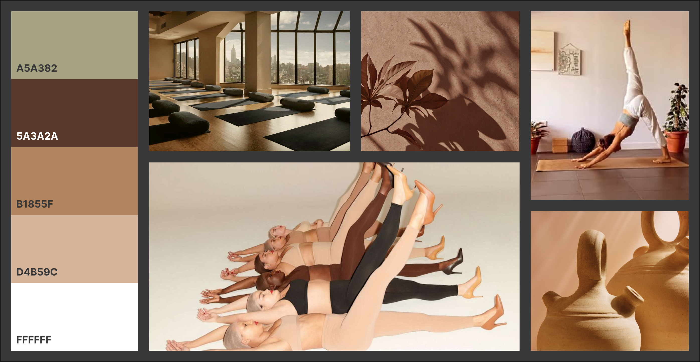
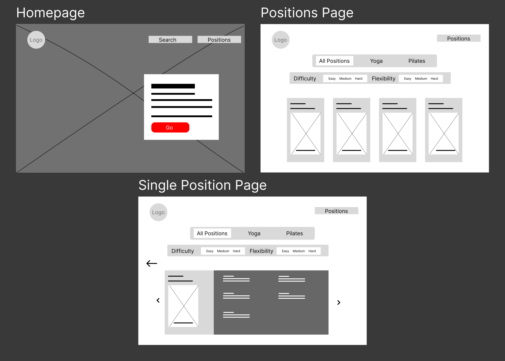
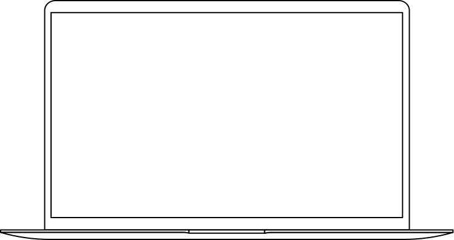

Anvaya
A yoga/pilates pose encyclopedia: clear, simple, and no-nonsense.
Problem: Most existing yoga and pilates platforms feel either outdated, overly clinical, or focused on just one practice. They rarely reflect the modern wellness lifestyle or aesthetic expectations of users who value clean, elegant design and tailored experiences. Users are often forced to switch between multiple apps and lack the ability to filter by difficulty, flexibility level, or muscle focus, making it harder to build a consistent, personalized routine.
Solution: A web app that blends both yoga and pilates positions into one cohesive, calming experience. Designed with a natural, elevated aesthetic, the platform speaks to users who value wellness as a lifestyle. Users can filter by practice, muscle group, difficulty, and flexibility. Each position includes clear visuals and step-by-step guidance, making it easy to explore and deepen their practice at their own pace.
Tools Figma, Adobe
Timeline 3 weeks
Role Research, Branding, UX/UI, Prototyping, Usability-testing

The Plan
Project Overview
The client has requested the design of a web application that serves as a curated, modern reference for yoga and pilates positions with special filters. The goal is to create an experience that feels elegant, serene, and intuitive, designed for a discerning audience who values wellness as a lifestyle, not a routine.
Client Vision & Tone
The tone and visual identity of the site should embody the same aspirational energy as brands like Skims, Equinox, and Uber Black, accessible only in the sense of ease, but exclusive in design and feel. The interface should be clean and organic, avoiding loud colors or clutter, while still feeling earthy, natural, and current.
Core Features
Position Library:
A comprehensive database of yoga and pilates positions, each with:
- Step-by-step guidance
- Targeted muscle group information
- Benefits and notes for proper form
Advanced Filtering:
- By discipline (Yoga / Pilates)
- By muscle focus
- By difficulty level
- By flexibility requirement
Future Scalability (Planning Considerations):
- Potential for flow-building in later phases
- Personalized recommendations based on user skill level or focus areas
- Integration with wellness lifestyle content (e.g., breathwork, meditations, etc.)
Competitor Analysis

Task Flow
With the competitor analysis finalized and the client requirements clearly outlined, I started focusing on what actions a user would take and in what order. By mapping out task flows, I could start to define the core journeys users would experience, such as browsing positions, filtering by focus area, or learning how to perform a pose.

Visual Design
Starting The Design: Mood Board

Wireframe
With the vision clarified, the moodboard finalized, and the task flows mapped out, I had everything I needed to begin wireframing. This phase allowed me to translate both the visual direction and user journey into structured layouts, ensuring each screen supported intuitive navigation and reflected the seamless, elevated experience the client had in mind.

Prototype
Iteration Process
After designing the initial wireframes, I moved into the prototyping phase, focusing on the Position Details page. This section went through several iterations based on usability feedback and testing. Each version explored different layout structures, content prioritization, and user preferences, helping me refine the balance between clarity, functionality, and visual engagement.

Iteration 1
In my first prototype, user feedback revealed that the layout felt too cramped, especially with more complex poses. As instructions grew longer, the text area became crowded. Users also mentioned that the overall structure felt visually overwhelming on smaller screens.

Iteration 2
I removed the left and right position previews and added a sidebar for “Similar Poses” instead to decrease clutter. While this reduced visual noise, many users preferred the familiarity and flow of the first iteration. They also noted that the muscle group placement felt disconnected.

Iteration 3
I refined Iteration 1's layout based on feedback, improving spacing, repositioning the muscle group icon, and enhancing the visual hierarchy. It still lacked a clear way to return to the full list of positions and needed step-by-step visual guidance to better support visual learners and non-English speakers.

Final Iteration
I prioritized clarity and accessibility. I added visual step illustrations for better guidance, especially for visual learners, and added the “Back to All Positions” button for smoother navigation. Layout adjustments ensured the page remained clean and readable, even for complex poses.
High-Fidelity Prototype
With all core pages refined through iteration and user feedback, I developed a high-fidelity prototype that brings the entire app experience to life. From browsing positions to exploring detailed pose instructions, every screen was designed to feel intuitive, accessible, and visually aligned with the app's calming aesthetic. This final prototype reflects a seamless flow, supporting users at every step of their movement journey.

Reflection
Final Thoughts
Working on Anvaya taught me how essential it is to understand your target audience from the start. Creating a wellness platform that felt both premium and approachable required balancing sophisticated design with intuitive functionality. I learned that iterating based on real user feedback, especially around complex features like filtering and pose instructions, makes all the difference between a concept that looks good and one that actually works. This project reinforced how crucial it is to design for accessibility and visual learners, ensuring the experience serves everyone who wants to deepen their practice.
Accessibility Considerations
Visual Learning Support: Added step-by-step visual illustrations for each pose, helping visual learners and non-English speakers understand proper form without relying solely on text.
Clear Navigation: Implemented intuitive filtering and prominent buttons to ensure users can easily navigate between poses and return to browsing.
Calming Design: Used soft, natural colors and generous white space to create a peaceful experience that reduces cognitive load and supports mindful practice.